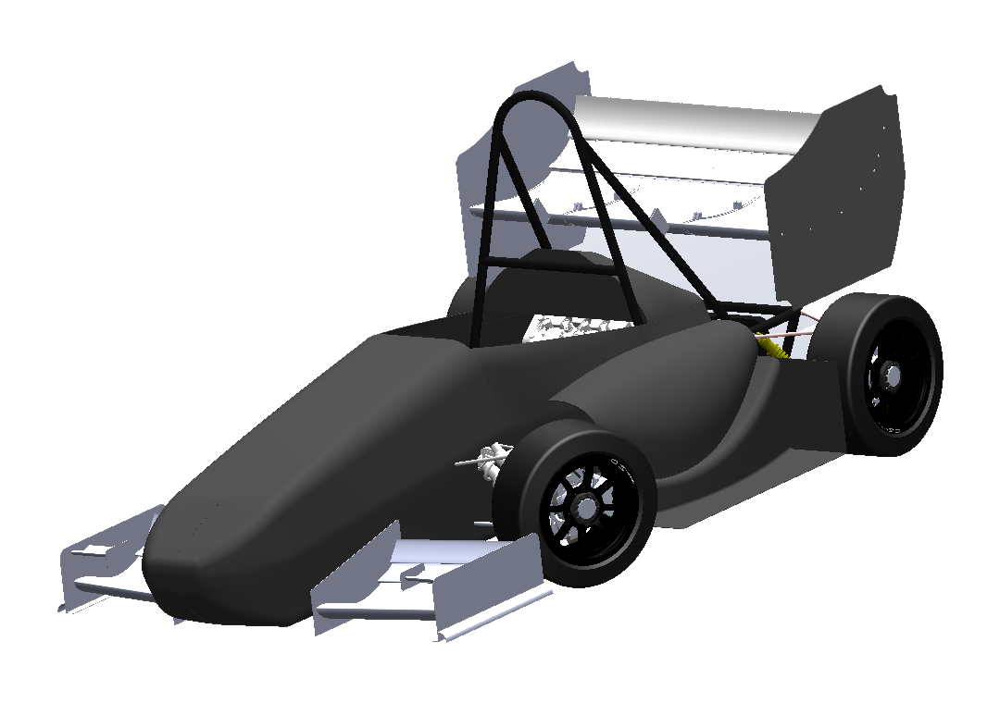

Vehicle aerodynamics · Head of Aerodynamics
Formula Student — ENP Racing Team aero package
A complete downforce-driven development study: rulebook and packaging constraints, a power-based drag budget, automated airfoil screening, 27 parametric 2D CFD runs, custom PSO-optimised airfoils, 3D wing and full-vehicle CFD, underbody devices, rear-wing structure, and a lap-time simulation to test whether the trade-off actually pays.
460 Ndownforce
296 Ndrag
1.97final CL/CD
−2.12 slap time